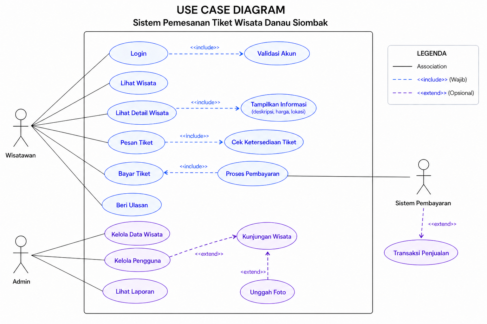
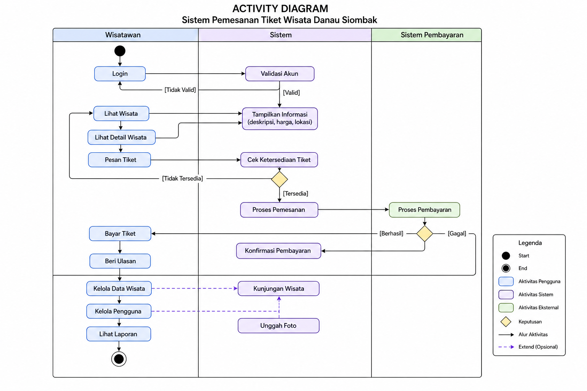
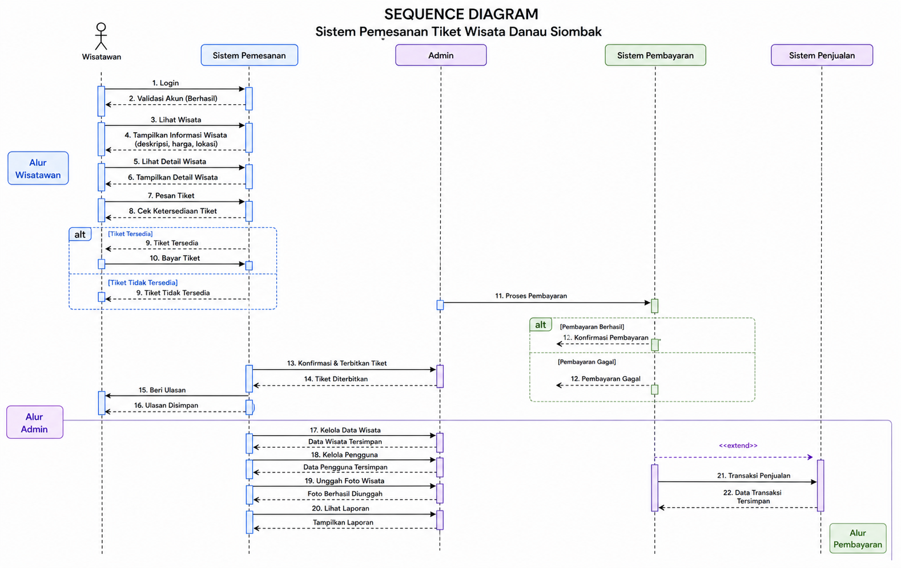
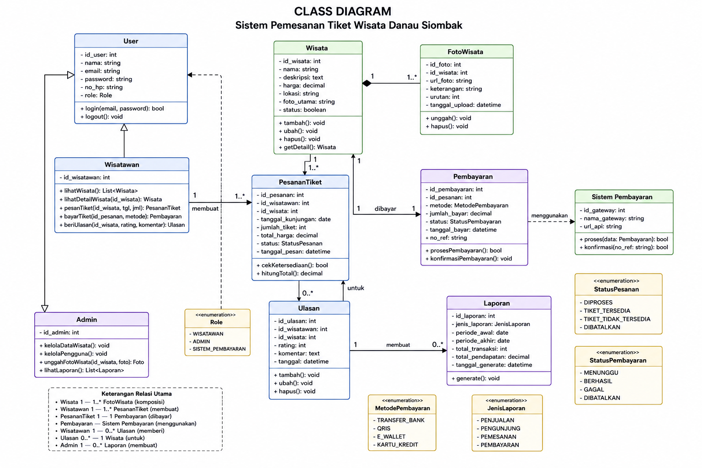

Danau Siombak merupakan salah satu destinasi wisata alam di Kota Medan yang menawarkan pemandangan danau yang indah, suasana sejuk, serta berbagai aktivitas rekreasi untuk keluarga dan wisatawan. Tempat wisata ini cocok digunakan sebagai lokasi bersantai, berfoto, maupun menikmati liburan bersama teman dan keluarga. Untuk melakukan pemesanan tiket atau mendapatkan informasi wisata, pengunjung dapat menghubungi admin melalui WhatsApp. Pengunjung cukup mengirim pesan kepada admin untuk menanyakan harga tiket, memilih tanggal kunjungan, serta melakukan konfirmasi pemesanan sebelum datang ke lokasi wisata.



